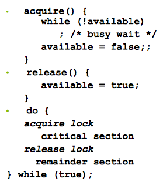
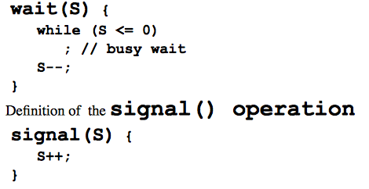
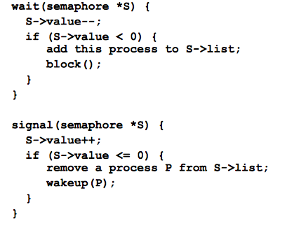
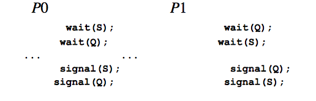

Race Condition
- incorrect state can arrise due to multi-access to a variable/data by processors concurrently
- outcome of the execution depends on the particular order in which data access occurs
- we need to ensure that access to data occurs by one process @ a time
Critical section problem
- each process has
crtical section segment of code:
- when one process is executing critical code, no other process may access its own critical section
- each prcess must ask permission to enter critical section, and may follow with exit section, then remainder section
solutions to critical-section problem
mutual exclusionprogress: if no process is exectuing its crtical section, and a process requests to execute its critical section, that process will gain priority to run its critical section asapbound waiting a bound must exist on the # of times a process(es) is allowed to enter its critical section after another process has made a request to enter critical and before that request is granted
Critical-Section handling in OS
- 2 approaches:
- preemptive: allows preemtion of process when running in kernel mode
- non-preemptive: runs until exits kernel mode, bocks or voluntarily yields CPU
Synchronization Hardware
- many systems provide hardware support for implementing critical code sections
- all sulutions below based on idea of
locking
- uniprocessors
- could disabe interrupts
- currently running code would execute w/o preemption
- generally too inefficient on multiprocessor systems
- modern machines provide special atomic hardware instructions
solution to critical-section problem using locks
do {
acquire_lock{};
critical section;
release_lock{};
remainder_section;
} while(true);
test_and_set Instruction
- exectuted atomically
- returns original value of passed param
- set the new value of passed param to TRUE
boolean test_and_set (boolean *target) {
boolean rv - *target;
*target = TRUE;
return rv;
}
Solution using test()_and_set()
- shared boolean variable lock, initialezed to FALSE
do {
while (test_and_set(&lock));
/* critical section*/
lock = false;
/* Remainder section */
} while (true);
compare_and_swap instruction
- executed atomicaaly
- returns original value of passed param
- set the variable 'value' to the passed param 'new_value' iff 'value == 'expected'
int compare _and_swap(int*value, int expected, int new_value) {
int temp = *value;
if(*value == expected) *value = new_value;
return temp;
}
Bounded-wait mutual exlusion w/ test_and set
do {
waiting[i] = TRUE;
key = TRUE;
while (waiting[i] && key)
key = test_and_set(&clock);
waiting[i] = FALSE;
/* crtical section */
j = (j+1) % n;
while ((j != i) && !waiting[j])
j = j+1 %n;
if(j==i)
lock = FALSE;
else
waitnig[j] = FALSE;
/* remainder section */
} while (TRUE);
Solution using compare_and_swap
- shared integer lock, initialezed to 0
do {
while (compare_and_swap(&lock,0,1) != 0);
/* critical section*/
lock = 0;
/* Remainder section */
} while (true);
MIPS and atomic instructions
- problem:
- 2 processors sharing an area of memory
- p writes, then p2 reads
- data race if p1 and p2 don't sync; result depedns on order of access
- Mips support
- atomic pari of instructions
- load linked : LL rt, offset(rs)
- store conditional: SC rt, offset(rs)
- succeds if location no changed since the LL; returns 1 in rt
- fails if location is changed: returns 0 in rt
mutex locks
- previous solutions are complicated and generally inaccessible to programmer
- OS designers build software tools to solve critical section problem
- simplest is mutex lock
- protect a crtical section by first
acquire() a lock then release() the lock
- calls to
acquire() and release() must be atomic
- this solution requires
busy waiting; known as spinlock
acquire() and release()

Semaphore
- sync tool that provides more sohpisticated ways (than Mutex Lokcs) for process to sync activities
- semaphore S - integer variable
- can only be accessed vai 2 indivisible operations
wait() and signal()wait() and signal() definitions
Semaphore usage
Semaphore implementation
- must guarantee that no 2 processes can execute the
wait() and signal()on the samesemaphore at the same time
- implementation becomes the critical section problem where the wait and signal code are placed in the critical section
- applications may spend lots of time in critical thus this is not a good solution
Semaphore implementation with no busy waiting
- w/ ea/ semaphore there is an associated waiting queue
- e/ entry in wait queue has 2 data items: value (int*) and *next to next record on list
- 2 operations:
block: place the process invoking the operation on the apropriate wait quewakeup: remove 1 of processes in wait queue and place it in ready queue
typedef struct{
int value;
struct process *list;
} semaphore;
implementation w/ no busy wait

Deadlock and Starvation
deadlock: two or more processes are waiting indefinitely for an event that can be caused by only one fo the waiting processes- let S and Q be two semaphores initialized to 1

Starvation: indefinite blocking- a process may never be removed from the semaphore queue in which it is suspended
priority inversion: scheduling problem when lower-priority process holds a lock needed by higher-priority process- solved via
priority-inheritance protocol